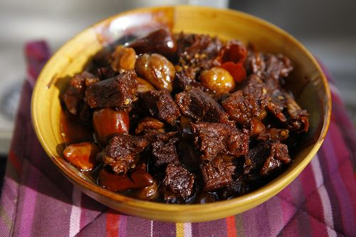

无肉不欢 @ Dec 08, 2010

俺家这两天无肉不欢，冬天到了嘛，补充脂肪过冬的时候。
1、红烧牛腩板栗，用了酱油+黄冰糖+八角+干的泡椒，炖的。发现冰糖炖的肉有种特别的光泽感，口感上也比绵糖要醇厚些；
2、猪尾骨炖白萝卜汤，谚语说：“冬吃萝卜夏吃姜，不劳医生开药方”，虽有些夸张，但多吃白萝卜的确可以清热解毒、有助消化、改善便秘，同时还等达到养颜美容的效果。

俺家这两天无肉不欢，冬天到了嘛，补充脂肪过冬的时候。
1、红烧牛腩板栗，用了酱油+黄冰糖+八角+干的泡椒，炖的。发现冰糖炖的肉有种特别的光泽感，口感上也比绵糖要醇厚些；
2、猪尾骨炖白萝卜汤，谚语说：“冬吃萝卜夏吃姜，不劳医生开药方”，虽有些夸张，但多吃白萝卜的确可以清热解毒、有助消化、改善便秘，同时还等达到养颜美容的效果。
« DRESS BLOG | *Reflections* »
13 Responses to “无肉不欢”
2010-12-08
看到这个让我想家了！五个月前还可以亲下厨做自己爱吃的饭菜，五个月后，家都没了，更不用说饭菜了。
2010-12-08
这么悲惨，家没了自己还是可以做菜吃啊，更有理由慰劳自己，过上更好的生活。积极的生活态度对自己总有帮助，只有自己能改变自己的生活状态。有谁会拒绝快乐呢？
2010-12-09
是的，我现在都用冰糖炖。哈哈。原来板栗也可以和牛腩烧啊。
2010-12-09
我最近迷上做羊肉，老公极其爱吃，很有耐心地炖一下午，加一点醋，会做出妈妈做的味道
2010-12-09
恩。我还用过红糖，也八错。看得我也忍不住想去买牛肉啦。
2010-12-09
烧牛腩时候加点丁香，少少的，很香
2010-12-09
人美，做的菜叶这么馋人。流口水ing，，今晚也依你的方法去做。
不过，所有的东西一骨碌全部倒下去，然后只管开火炖就行了吗？要不要分先后？
2010-12-09
我做红烧的肉类，统统用冰糖
2010-12-10
楼上的有没有做过清汤羊肉？我计划周末尝试一次，呵呵~
2010-12-10
清汤的做过，我会放胡萝卜，有时候放大白菜和粉丝，做汤，好像买羊前腿比较好
2010-12-10
不过我觉得放胡萝卜更好，胡萝卜不会抢羊肉的味道，而且可以让羊肉变烂，白菜我试过，觉得羊肉的味道反而不明显了
2010-12-12
楼上说的真对，人美做菜还那么好，这可怎么了得？：）
2010-12-12
嘻嘻，我也是肉食动物。你这个菜做的真是看了眼馋啊～～
Leave A Reply
存档只读，评论已关闭。